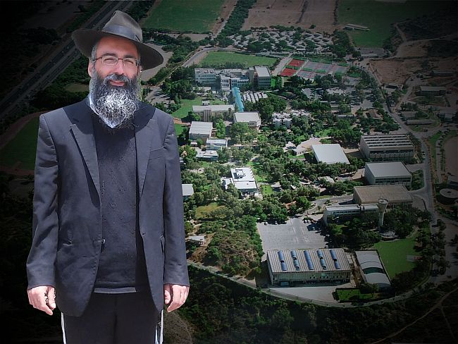

Jewish Souls at Wingate
The Wingate Institute, located at the Poleg Interchange between Netanya and Hertzliya, is the largest professional learning institution in Eretz Yisroel for physical education. Thousands of students pass through its gates each day. Waiting for them there are Rabbi Asaf Shaked and his wife Noa, Chabad chassidim who made their own long and winding journey until they discovered the light of Torah and Chassidus. In this profile, the shluchim at Wingate tell their life story for the first time, as they provide a fascinating account of their growing outreach activities.
Translated by Michoel Leib Dobry

During these moments of calm and tranquility, after another heavy day of study in the field of athletics, several dozen students sit together in one of the campus dormitories to hear a fascinating lecture on Judaism, sponsored and organized by the Rebbe’s shluchim to Wingate, Rabbi Asaf Shaked and his wife Noa. This is a monthly event, in addition to the seasonal holiday activities, and the shluchim make certain not to let a month go by without holding at least one lecture on Judaism.
This month’s lecturer is former actor R’ Gilli Shushan. In his inimitable style, Gilli tells the students his life story, including the various ups and downs he experienced before coming to the light of Yiddishkait and Chassidus. The many students, some of whom even knew him in the past, thirstily absorb his words. When he finishes his lecture and opens the floor to questions, one student asks: “Gilli, this is the story of your life. Why do you think that this should have an influence upon us?”
Gilli thought for a moment and then proceeded to answer the question with a metaphor. “Do you like soccer?” Gilli asked the student, who replied in the affirmative. “Running after the ball on the soccer field represents the sea of material and spiritual possibilities that this world has to offer us. When we manage to put the ball through the goal – this is the whole point of the game. It’s a tremendous enjoyment, and it’s a point in our lives that not everyone manages to attain. And even for those who do attain it, it only comes after a great deal of effort. The revelation of the light of Judaism can be compared to putting the whole world through the goal – the thrill of victory. Now, think about a situation of no more trips around the field, yet you’re in a constant and never-ending state of ‘goal.’”
The student accepted the answer. This was the first Torah program he ever attended – and he quickly caught the bug. He hasn’t missed an event since.
This is what characterizes the Chabad activities at a college that trains thousands of IDF officers each year alongside sports teachers in a wide range of athletic fields in Eretz Yisroel. Asaf himself is a Wingate graduate and former curriculum director, and since becoming a baal t’shuva, he has used his connections at Wingate to spread Yiddishkait throughout the campus together with his wife in a uniquely charming fashion.
IN THE NATIONAL INDOOR SOCCER LEAGUE
R’ Asaf was born in Petach Tikva and was raised in a typically ‘traditional’ Jewish home. “’Tradition’ in our house meant making ‘Kiddush’ and then doing whatever we wanted. When I was seven years old, my paternal grandfather passed away. This was a most traumatic experience for my father. As a result, he took a step back in his religious observance, and our family became a classic middle-class unit without a shred of Jewish tradition. The fact that we moved to the city’s ‘Ein Ganim’ neighborhood, whose residents are primarily secular and left-wing, merely intensified the distance from the path of Torah.”
From a very early age, Asaf was drawn to the wide world of sports, where he invested considerable effort and even competed in the field of indoor soccer on the national level. “Despite my great dedication to sports, my parents didn’t let me neglect my studies. They were constantly worried about their children’s employment future, and I subsequently passed my matriculation exams with very good marks.”
After receiving his high school diploma, he was inducted into the Israel Defense Forces and served as a tank machinist on an artillery base in Mitzpeh Ramon. “While on that base, I got my first direct exposure to the traditions of our forefathers. A group of hesder yeshiva soldiers served on the base, and I learned from them for the first time in my life the number of daily prayer services, how to daven, when to say ‘Amen,’ when to sit, and when to stand. This was a group of very serious young men, and I was happy to establish a connection with them. During that military stint, I put on t’fillin for the first time since my bar-mitzvah.”
As a result of that experience, Asaf began an in-depth study of the essence of t’fillin, and he decided to put them on every morning. “Based on where I was holding at the time, I still hadn’t thought about becoming a baal t’shuva. I settled for putting on t’fillin and went back to my regular pursuits.
“After completing my military service, I earned my bachelor’s degree in business administration and got a job in a bank. The managers approved of my work, and I was quickly promoted to run one of the departments. At a certain stage, I began to feel a sense of boredom and emptiness, and I decided to leave my comfortable life, my good salary, and resume my involvement in sports.”
Asaf registered as a student at Wingate College, and then boarded a plane for the Far East to do a little traveling before the start of the new academic year. “I arrived in Bangkok a week before Yom Kippur. My decision was not to go into the Chabad House, rather to investigate the local sources of spirituality. I visited the shrines and monasteries with a few friends and checked out their leaders. I saw how the local Gentiles put every form of crawling insect into their mouths, and I realized that I simply wasn’t prepared to accept anything from these people. I made my way to the Chabad House and had a meeting with Rabbi Nechemia Wilhelm – a meeting that changed my life.”
Asaf arrived at the Chabad House for the Mincha service on Erev Yom Kippur and was immediately captivated. In retrospect, he notes three things that had a powerful influence upon him during this visit. First, the shliach’s family unit: the honor and respect Rabbi Wilhelm gave to his wife and children. Second, there was amazing hospitality in their home. “Jews from all walks of life come to them and are welcomed cheerfully,” he recalled. The third thing that touched his heart was the happiness and joy. From his youth, he recalled the High Holidays as a time of tears, mourning, fear, and dread. However, in the Chabad House, people do t’shuva through simcha.
When he returned to Eretz Yisroel, he began his studies at Wingate, while developing a close connection with the shluchim in Petach Tikva – Rabbis Eliezer Weissfish, Asher Deitsch, and Mordechai Gorelick. “Due to my previous familiarity with the sport of indoor soccer, I was appointed as a curriculum director. I was then revealing the ‘lights of t’shuva,’ and I called our team ‘the League of Peace.’ According to my vision, its objective was to build a bridge between Arabs and Jews, establishing greater brotherhood among the nations. At the same time, I learned the teachings of Chabad, especially via the Internet, with the constant assistance of the shluchim in Petach Tikva.”
While Asaf knew that the path of Chabad was his path, he was still far from a decision to become a chassid. “The revolution occurred five years ago on the Seder night, when Rabbi Gorelick asked me to help in organizing the city’s main Pesach Seder. I happily agreed and met there a young baal t’shuva who had come from Ramat Aviv, named Shimi Bar Mucha, and he had come back to his Jewish roots in Pushkar, India, with the assistance of the local shliach, Rabbi Shimi Goldstein. He was very enthusiastic, and his enthusiasm was contagious. A month later, I traveled to Pushkar and went to learn in the Chabad House yeshiva.”
When Asaf came back from Pushkar, he was a full-fledged “Tamim” in every respect – in both his internal and external garb. He went to learn for a lengthy period at the Chabad yeshiva in Ramat Aviv, followed by another six months at the central Yeshivas Tomchei T’mimim in Kfar Chabad. His Torah studies continued at the “Tzemach Tzedek” kollel in Yerushalayim. “I developed a close relationship over a period of time with Rabbi Yair Calev of Kfar Chabad. After completing my studies at Wingate, I met my future wife while I was working for the Eshnav organization.”
THE FATHER’S UNWRITTEN WILL
Noa Shaked was born and raised in Cholon by parents in constant conflict about religious matters. Her father a”h was an observant Jew who believed in G-d and His Torah with every fiber of his body and soul. He went to shul to daven three times a day, following the traditions of the Jewish People with utmost stringency. Her mother, on the other hand, was raised in a secular home and was not particularly observant of Torah and mitzvos. “We were raised in a home with daily conflicts about religious observance. During the early years of my childhood, my father obligated us to go to synagogue and we even learned in a religious school. However, we did this out of a sense of compulsion, not love.”
“In later years, the family abandoned all signs of Jewish tradition, and my father was the only one who faithfully continued to attend synagogue services, wear a kippah on his head, and stringently observe Torah and mitzvos. When we had completely left the path of mitzvos, we saw that it caused our father tremendous distress. While this bothered our conscience, we didn’t feel the need to be any different from our mother or our friends and neighbors. This situation continued until the day when we received the terrible news that our father had contracted a terminal illness and his days on this earth were numbered.
“My father lay in bed for six weeks suffering in pain, but not a word of complaint passed through his lips. I would see him writhing in agony, and when someone asked him how he felt, he would reply, ‘Praise to the Creator.’ Hearing this answer made me seethe. Finally, I got up the nerve and asked him, ‘Abba, if you’re in so much pain, how can you possibly thank G-d?’ He looked at me and said, ‘My daughter, before making Kiddush on Shabbos, we say, ‘They will comfort me’. My interpretation of these words is that whatever the Alm-ghty does is for the good.’
“As I listened to my father, I realized that despite his physical pain, he had no complaints against G-d. I suddenly understood that his faith is also a form of lifestyle. A few weeks after his passing, I decided in my heart that I must make an in-depth exploration into his way of life, a path I had constantly tried to avoid. During this time, I was living on Sheinkin Street in Tel Aviv. I had heard about a local Litvishe-brand study program for women, and I went there to learn about Yiddishkait. In those first classes, I put up a defiant front out of a deep-rooted fear that they would manage to get me to do t’shuva.”
According to Noa, she still didn’t understand the differences between the various strands of ultra-Orthodox Judaism. In her eyes, all Jews wearing yarmulkes were the same. The dramatic moment that caused her to make a change in her life was a visit to the Ascent Institute in Tzfas. “We came to spend a Shabbos there and we ate the Shabbos meals at the home of one of the local Chassidic families. It was a very exciting experience. The warm and friendly atmosphere had a truly uplifting effect upon us.”
That Shabbos in the home of a Tzfas Chabad family was the turning point, and anything after that was, in her words, merely a form of “spiritual addiction.” “I started taking vacation from work to travel to Tzfas whenever I could. One Shabbos at ‘Ascent,’ I learned about the possibility of writing to the Rebbe via ‘Igros Kodesh,’ and I did so at the first opportunity. The answer I received was a long letter from the Rebbe on the subject of tznius. After inquiring into the concept of Jewish modesty at length, I decided to buy a whole new wardrobe that would meet Torah standards.”
Noa completed her process of becoming a baalas t’shuva, and during a visit to Kfar Chabad with the Eshnav organization, a shidduch was proposed for her with one of the Eshnav activists – none other than Asaf Shaked. The two became engaged with the Rebbe’s bracha, and after their wedding, they established their residence in Kfar Chabad.
The young couple began their new lives together – Asaf as a sports instructor and Noa working in hi-tech. It was clear to them that they owed a tremendous debt of gratitude to the Rebbe, and they wanted to show their appreciation by going out on shlichus. At this point, Asaf recalled the Wingate Institute where he had worked and had many friends.
BETWEEN ONE SPORT AND ANOTHER – DO ANOTHER MITZVAH
The Wingate Institute, located at the Poleg Interchange between Netanya and Hertzliya, is the largest professional learning institution in Eretz Yisroel for physical education. The Academic College at Wingate, founded in 5704, is an independently recognized learning institution for higher education. The college provides academic studies on a high level for training students in sports, physical education, exercise, dance, health and motor rehabilitation.
The college was founded with the objective of achieving greater professional training in education, exercise, administration, and leadership for various fields of sport, thereby creating a study and learning center for advancing these subjects.
The campus has an attractive green landscape, giving those passing through its gates a comfortable feeling of tranquility. The spacious and air-conditioned lecture rooms include the most modern and advanced learning tools and sports equipment in their respective fields. Each year, the college trains thousands of graduates in its academic studies program, together with its various schools dealing with alternative medicine, licensing sports coaches and trainers, teaching sports medicine and methodology, and more.
When did you start your activities at Wingate?
“Even before we got married, during my studies there, I began my outreach work. The germ of shlichus apparently catches anyone who comes to Chabad, even if they haven’t become full-fledged Lubavitchers. Our first activities were on Chanukah. I brought menorahs, hung up signs, purchased a sizable quantity of donuts, and we lit the Chanukah lights before a large assemblage of people in the student dormitories. By Purim I was already much more committed to my mission, and I organized a mishloach manos distribution to numerous Wingate students. In addition, I traveled with several friends to the Abarbanel Mental Health Center in Bat Yam to bring some holiday cheer to the patients.
“After our wedding, we arranged a pre-Pesach workshop in the student dorms to explain how to celebrate the Seder night. Similarly, we organized a program in preparation for the Shavuos holiday. During the following Chanukah, we brought Rabbi Tuvia Bolton to speak, and on Purim, our guest was R’ Gilli Shushan. This past Rosh Chodesh Nissan, Rabbi Amram Shaetel from Telmon came and taught the maamer ‘Ana Nasiv Malka’ to the students. The participation is considerable and grows all the time. Dozens of people who come to each activity ask when the next one will be.”
Do they give you a free hand to come in and make activities on the campus?
“During the initial stages of our work, even my wife was certain that after the first outreach activity, they would throw us out – but they didn’t. The fact that I had previously learned there and had even served as a curriculum director established connections and personal recognition with the institute’s administrative board, and this definitely made it easier to arrange our activities. The directors not only didn’t interfere, they were more than happy to help. They spread the word before each outreach activity via text message and social media, asking students to attend. They even help organize an appropriate venue for each event. The students come here with an open mind to listen and acquire some knowledge.”
Your activities are continuous, taking place throughout the year. Have they borne fruits?
“We don’t do this for the ‘fruits,’ however, we constantly come across moving stories of students who became stronger in their adherence to Torah values after taking part in our activities. There’s a female student who has established a very close connection with my wife, and she told her that while she wasn’t religious and wasn’t ready for a life of mitzvah observance, she committed herself since her wedding to keep the laws of family purity. Whenever she has a question, she turns to my wife, who consults with a proper rabbinical authority and then gets back to her with an answer.
“The connection has become stronger over the years, and a short time ago, she and her husband were blessed with the birth of a child. Not long afterwards, I heard that they had added another mitzvah to their ‘list.’ The new mother had begun keeping Shabbos and lighting Shabbos candles, while her husband started coming to synagogue each evening and for Shabbos. I was very inspired. We have a good connection with the couple, and they are currently going through a process of strengthening their commitment to Torah and mitzvos.
“There’s another young woman who was in a very complicated emotional state. She had gone from place to place in search of a little peace for her soul, but to no avail. Then, during one of our Torah classes, she heard that every Jew – no matter how depraved he/she may have become – is a portion of G-d Above. This deeply moved her. This passage in Tanya really spoke to her and it made a far-reaching change in her life. She started getting stronger in her mitzvah observance, and some time ago, she married a baal t’shuva and they established a home together on the foundation of Torah values.”
Can you tell us about a case of Divine Providence you have encountered?
“Absolutely. Some time ago, I decided to explore the subject of the interface of body and soul from a Torah perspective. Someone who has helped me a great deal in becoming familiar with the Torah sources on this subject is Rabbi Yitzchak Ginsburgh of Kfar Chabad. After I learned the material in depth, a young Wingate student met me after he had a class on Aristotle and Plato, and he expressed his disappointment that Judaism brings nothing on matters of physical health and fitness. Naturally, he fell into my hands like a ‘ripe plum,’ and I poured out everything I had learned from Torah sources, primarily Rambam…”
Tell us about your work in curbing the tide of assimilation.
“A fair number of Arabs learn at the college, and some of them even live in the dormitories. They come from very well-to-do homes, and several Jewish girls r”l have already been seduced into entering permanent relationships with these young Arabs. A part of our outreach work is to increase the sense of Jewish identity among these young women and encourage them to dismiss any thought of assimilation.
“Several months ago, we held a successful Chanukah event in the dorms. About a week later we received an emotional e-mail from one of the students. She wrote to us that she has a relative who is a medical student, and while in school, she met a young Arab and married him. Although many family members shunned her, she never seemed to understand why. People are people and they’re all the same, she thought. After she heard the Chanukah lecture, she realized the uniqueness of the Jewish People and the mistake that her relative had made.”
These activities cost a considerable amount of money. How do you manage?
“Due to the character of the people here, the activities are conducted on a very high level. When we organize an event, it will have a lot of refreshments. The publicity is done through the students’ social media. With high-profile lecturers, the events incur heavy expenses. We obtain all the funds on our own or through the charitable contributions of friends and family. We clearly see numerous cases of Divine Providence in this manner. Quite often, we organize activities without knowing how we would cover the costs. Then, the money miraculously comes through.
“I’ll give you one example: Before our last Rosh Chodesh Adar event, we made a deal with an artist and had already printed an advertisement. Many students registered for the program, however, we still didn’t know how we would manage to pay all the expenses. To be quite honest, I was very troubled by this. Then one day, I got a letter in the mail that I have a retirement fund from a previous job in the amount of eleven thousand shekels, and if I didn’t withdraw the money immediately, it would be forfeited…
“I recall before one of our activities, one of my wife’s good friends asked if she could make a contribution in memory of one of her acquaintances. She ended up sponsoring the entire event. Similarly, we have good friends, avreichim in Kfar Chabad, who help us out with some nice contributions.”
How are the subjects of Moshiach and the Redemption broadcast in your activities?
“Every lecture includes some reference to the subject of Moshiach and the Redemption. When we open the floor to questions, there will always be a student who will raise the issue. It’s interesting that there’s one question that comes up all the time: Why are you so interested in doing whatever the Rebbe demands of you? What do you profit from this? In the secular world, every good deed has a hidden interest. Our response: Yes, we do have an interest – we want Moshiach to reveal himself. Only then do we start discussing what Moshiach is, how close we are to his arrival, and how he is affecting the world. Moshiach has become a universal subject.
“We openly publicize the holy proclamation of ‘Yechi Adoneinu’ on our printed signs and announcements, and we bring ‘Moshiach’ flags to all our events. It’s also interesting to note that when I ran the ‘indoor soccer’ league, we gave it the logo of a ‘Moshiach’ flag and the inscription ‘Tachshov tov, yihye tov’ (Think good and it will be good).”
THE FUTURE
The Shakeds are in constant touch with the students and the educational staff, and at the end of each outreach activity they’re already making preparations for the next one. “Our big dream,” they say, “is to rent a caravan near the student dorms and turn it into a permanent Chabad House with Shabbos meals and daily activities. This will demand a larger and much more extensive budget.”
Nosson Avrohom. "Jewish Souls at Wingate." Beis Moshiach, no. 1070 (June 1, 2017).